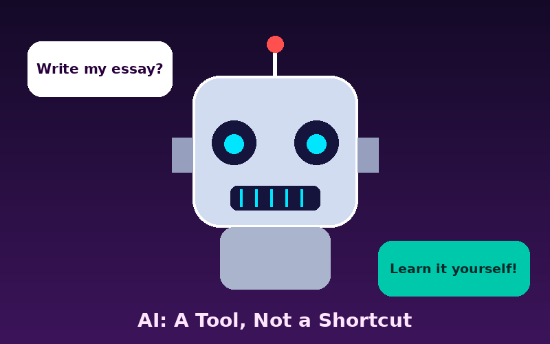

MIS & AI EthicsWebsite OverviewPrayag PurohitOctober 29, 2026Correct AI UsageUsing AI correctly in college means treating it as a tutor and assistant, not as a replacement for my own thinking. I can use AI to explain hard concepts, brainstorm ideas, check my grammar, or quiz me before an exam, as long as the final work is mine. I must always follow my professor's rules and clearly cite any AI tool that I use. When I do this, AI helps me learn faster while I still honor the Aggie Honor Code. AI Response (Claude, Anthropic): Your reasoning is strong. Treating AI as a tutor rather than a substitute keeps the learning with you, and citing your tools fits the spirit of the Aggie Honor Code. Critique: "as long as the final work is mine" could be sharper. Define what counts as "mine," such as writing your own drafts and being able to explain every answer without the AI. Alternative view: policies differ by course, so confirm the rules in each syllabus first. AI can also be wrong, so check its claims against course materials before you trust them. Benefits of AI
Who Benefits?
How AI Tools Used
Read my full AI ethics Word document (ai_ethics.docx) to see my paragraphs on correct and incorrect AI use. You can also open the PDF version of the document (ai_ethics.pdf) in your browser. Incorrect AI Usage
In my opinion, AI is a powerful tool, but using it to cheat takes away the reason we go to college. Students who copy AI answers never build the skills that employers expect them to have. It is always better to ask for help or admit that I am stuck than to risk my integrity. Aggies do not lie, cheat, or steal, and that promise applies to AI as well. |